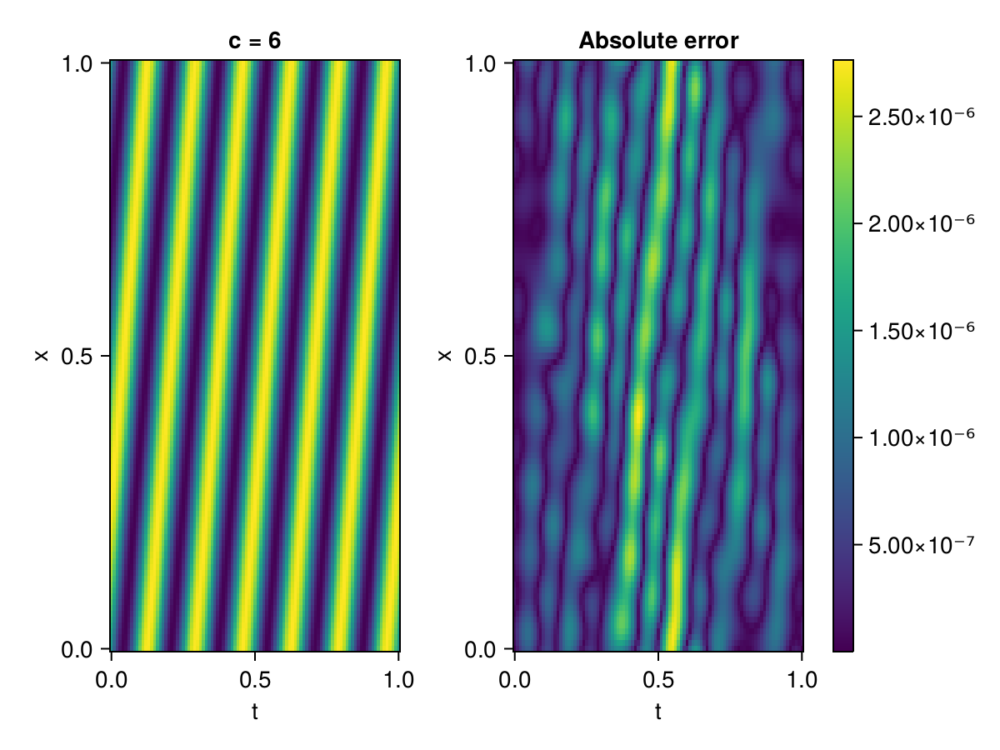

1D Convection Equation
Consider the following 1D-convection equation with periodic boundary conditions.
\[\begin{aligned} &\frac{\partial u}{\partial t}+c \frac{\partial u}{\partial x}=0, x \in[0,1], t \in[0,1] \\ &u(x, 0)=sin(2\pi x) \\ \end{aligned}\]
First we define the PDE.
using ModelingToolkit, Sophon, IntervalSets, CairoMakie
using Optimization, OptimizationOptimJL, Zygote
@parameters x, t
@variables u(..)
Dₜ = Differential(t)
Dₓ = Differential(x)
c = 6
eq = Dₜ(u(x,t)) + c * Dₓ(u(x,t)) ~ 0
u_analytic(x,t) = sinpi(2*(x-c*t))
domains = [x ∈ 0..1, t ∈ 0..1]
bcs = [u(x,0) ~ u_analytic(x,0)]
@named convection = PDESystem(eq, bcs, domains, [x,t], [u(x,t)])\[ \begin{align} \frac{\mathrm{d}}{\mathrm{d}t} u\left( x, t \right) + 6 \frac{\mathrm{d}}{\mathrm{d}x} u\left( x, t \right) =& 0 \end{align} \]
Imposing periodic boundary conditions
We will use BACON to impose the boundary conditions. To this end, we simply set period to be one.
chain = BACON(2, 1, 8, 1; hidden_dims = 32, num_layers=4)MultiplicativeFilterNet(
filters = BranchLayer(
filter_1 = DiscreteFourierFeature(2 => 32), # 32 parameters, plus 64
filter_2 = DiscreteFourierFeature(2 => 32), # 32 parameters, plus 64
filter_3 = DiscreteFourierFeature(2 => 32), # 32 parameters, plus 64
filter_4 = DiscreteFourierFeature(2 => 32), # 32 parameters, plus 64
),
linear_layers = PairwiseFusion(
Base.Broadcast.BroadcastFunction(*)
layer_1 = Dense(32 => 32), # 1_056 parameters
layer_2 = Dense(32 => 32), # 1_056 parameters
layer_3 = Dense(32 => 32), # 1_056 parameters
),
output_layer = Dense(32 => 1), # 33 parameters
) # Total: 3_329 parameters,
# plus 256 states.For demonstration purposes, the model is also periodic in time
sampler = QuasiRandomSampler(500, 100) # data points
strategy = NonAdaptiveTraining(1 , 500) # weights
pinn = PINN(chain)
prob = Sophon.discretize(convection, pinn, sampler, strategy)
@showprogress res = Optimization.solve(prob, BFGS(); maxiters = 1000)u: ComponentVector{Float64}(filters = (filter_1 = (bias = [-0.789185929887539; 0.7670635724634859; … ; 0.9733895754136824; 0.12591788117832933;;]), filter_2 = (bias = [1.079393409611031; -0.9667274423211697; … ; -0.5803605350255698; 0.6455171858321622;;]), filter_3 = (bias = [0.9435742283065961; -0.829106764486824; … ; -0.4372856685390707; 0.513774674501636;;]), filter_4 = (bias = [-0.28626063694812365; -0.5099273789334059; … ; -0.574869379270133; -0.9816220408045048;;])), linear_layers = (layer_1 = (weight = [0.410719878715793 0.0041430000863657244 … 0.008268416587722052 0.029356060838175952; 0.24877113457080166 0.35593043476586383 … 0.2523425268619278 -0.3165016911710638; … ; -0.4220337807775645 -0.26580767525345217 … 0.037303646897993856 -0.15107039149739712; 0.37080191425753667 -0.39521779756777226 … -0.056465249040679115 -0.5749522003066738], bias = [-0.14540900309953583; -0.0151282856464731; … ; 0.07930489938139615; 0.03268823089917014;;]), layer_2 = (weight = [-0.2549933328198144 0.3019090110766842 … 0.09221898698939592 0.11803277041659777; -0.021760941984954294 -0.3166956611028139 … 0.16534011350443137 -0.07488750536821498; … ; 0.1360509726819192 -0.11985965137040311 … -0.17637548018555516 -0.49288176070472717; -0.49571069953277513 -0.15686393655585956 … -0.09594846069992859 0.02295301528919133], bias = [0.028471901059737417; 0.10596175172772808; … ; 0.0324198717455216; 0.022447992531604153;;]), layer_3 = (weight = [-0.09094757772050018 -0.11853532154519417 … 0.2948035005083688 0.05217904237622506; -0.28749099022941105 0.24305381958989297 … -0.307889044070147 -0.1565559044572964; … ; 0.5208884314777388 -0.14956815515990549 … 0.11802062243021832 -0.1975209166390701; -0.3548116428635938 0.22927138159204727 … 0.14179247923818766 -0.10789091819372726], bias = [-0.020653119506669527; -0.012657417867071948; … ; -0.04811017510216443; -0.06193431641448001;;])), output_layer = (weight = [-0.1361629113070005 -0.02030574461152436 … 0.09934786967817452 -0.00035375010574893983], bias = [-0.08262810627878309;;]))Let's visualize the result.
phi = pinn.phi
xs, ts= [infimum(d.domain):0.01:supremum(d.domain) for d in domains]
u_pred = [sum(phi([x,t],res.u)) for x in xs, t in ts]
u_real = u_analytic.(xs,ts')
fig, ax, hm = heatmap(ts, xs, u_pred', axis=(xlabel="t", ylabel="x", title="c = $c"))
ax2, hm2 = heatmap(fig[1,end+1], ts,xs, abs.(u_pred' .- u_real'), axis = (xlabel="t", ylabel="x", title="Absolute error"))
Colorbar(fig[:, end+1], hm2)
display(fig)
We can verify that our model is indeed, periodic.
xs, ts= [infimum(d.domain):0.01:supremum(d.domain)*2 for d in domains]
u_pred = [sum(phi([x,t],res.u)) for x in xs, t in ts]
fig, ax, hm = heatmap(ts, xs, u_pred', axis=(xlabel="t", ylabel="x", title="c = $c"))
display(fig)